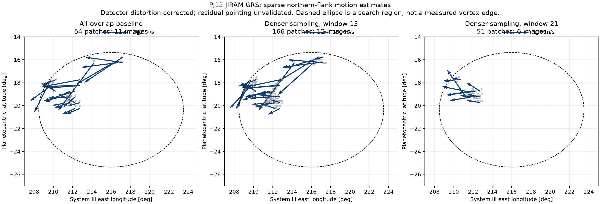
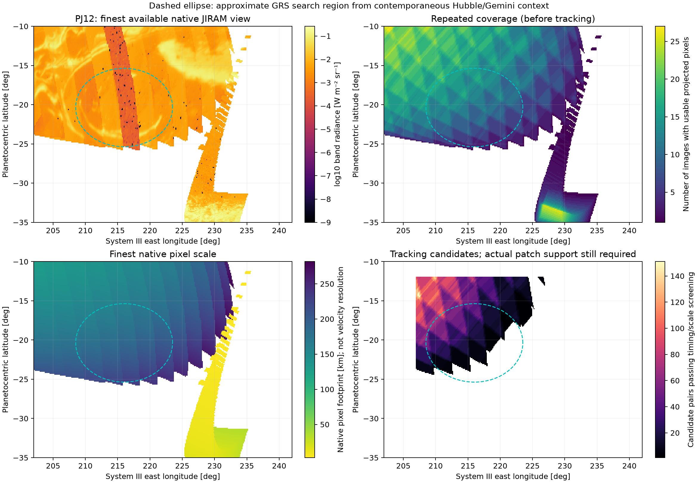

20 November 2026 · Native calibrated images · Computed and retained on Unity
These are diagnostic cloud-pattern motions. Fixed detector distortion is corrected; residual per-image pointing errors are not fitted or validated. Speed percentiles describe the distribution, not confidence intervals. Overlapping patches and pairs sharing images are correlated.
| Run | GRS patches | Pairs / images | Median speed | 5–95% speeds | Median patch span |
|---|---|---|---|---|---|
| All-overlap baseline | 54 | 16 / 11 | 101 m/s | 50–175 m/s | 1575 km |
| Denser sampling, window 15 | 166 | 17 / 12 | 91 m/s | 47–168 m/s | 1574 km |
| Denser sampling, window 21 | 51 | 7 / 6 | 76 m/s | 44–118 m/s | 2179 km |
The estimates lie principally on the northern side. Westward motion there is compatible with southern-hemisphere anticyclonic circulation, but a local motion signal does not establish flow around the vortex. Background flow and residual pointing offsets can contribute.

Arrows summarize pair-median velocities in half-degree bins. Grey dots are accepted patch centres. Empty areas have not been filled or interpreted as zero velocity.
All 527 M/LM native images from PJ12 were downloaded and checked against archive checksums on Unity. Forty-six have some valid coverage of the approximate GRS search ellipse. The screen found 482 eligible overlapping pairs in the surrounding region; 232 intersect the search ellipse. The finest native pixel scale inside it is about 156 km. This is detector sampling, not wind resolution. Accepted GRS tracking patches span roughly 1,500–2,200 km.

The approximate GRS location comes from contemporaneous HST/Gemini context in Wong et al. (2020), Figure 10. Planetographic latitude was converted to planetocentric latitude. The ellipse is a search region, not a fitted vortex boundary. Native geometry, rather than the observing-sequence name, determines coverage.
15-pixel window: 494 of 672 synthetic translation trials accepted; accepted 95th-percentile displacement error 0.076 chart pixels; 0 accepted errors above half a pixel. These ideal translations use actual texture but do not test cloud evolution, pointing recovery or vorticity recovery. A chart pixel is half a native detector pixel before local projection scaling.
21-pixel window: 394 of 672 synthetic translation trials accepted; accepted 95th-percentile displacement error 0.055 chart pixels; 0 accepted errors above half a pixel. These ideal translations use actual texture but do not test cloud evolution, pointing recovery or vorticity recovery. A chart pixel is half a native detector pixel before local projection scaling.
No release: a complete GRS circulation map, peak wind, vorticity, divergence, joint vorticity–strain PDF, or SQG comparison. Blank derivatives indicate missing support, not zero vorticity. This conclusion concerns the tested PJ12 data and method; it does not exclude other JIRAM passes.